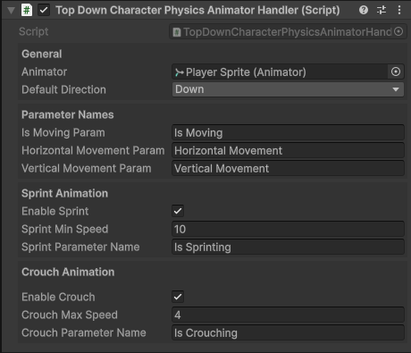

Top Down Character Physics Animator Handler
The Top-Down Character Physics Animator Handler is physics-driven, Every fixed update the position of the GameObject the component is attached to is compared to its possition last frame.
This is used to determine the direction the character is moving and speed the character is traveling at.

Important
Due to the nature of how the Top-Down Character Physics Animator Handler works, crouch animations can only be played when the character is moving.
How It Works
- Calculates movement each
FixedUpdate()by comparing current and previous positions. - Determines direction and speed, then updates Animator parameters.
- Optionally toggles sprint/crouch states when enabled.
- Animator Controller uses those parameters to play specific animations.
Inspector Fields
References
| Parameter | Type | Description |
|---|---|---|
| Animator | Animator |
The Animator component used to set parameters. |
Parameter Names
| Parameter | Type | Description |
|---|---|---|
| Is Moving Param | Bool |
The Animator parameter name used to indicate whether the character is moving. Set to true when movement is detected. |
| Horizontal Movement Param | String |
The Animator parameter name for horizontal input.-1 when moving left and 1 when moving right. |
| Vertical Movement Param | String |
The Animator parameter name for vertical input.-1 when moving down and 1 when moving up. |
Sprint Animation
| Field | Type | Description |
|---|---|---|
| Enable Sprint | Bool |
If true, enables sprinting animations when speed is greater than Sprint Min Speed. |
| Sprint Min Speed | Float |
Minimum speed required to trigger sprint animation. |
| Sprint Parameter Name | String |
The Animator parameter name for the sprint state (default: "Is Sprinting"). |
Crouch Animation
| Field | Type | Description |
|---|---|---|
| Enable Crouch | Bool |
If true, enables crouching animations when speed is less than Crouch Max Speed. |
| Crouch Max Speed | Float |
Maximum speed for crouch animations to be used. |
| Crouch Parameter Name | String |
The Animator parameter name for the crouch state (default: "Is Crouching"). |
Public Methods
All of these methods can be called directly from any instance of the Top Down Character Physics Animator Handler component.
ChangeDirection(FourDirectional/EightDirectional): Immediately update the direction the character is facing.PlayAnimation(string): Play a specific animation or blend tree by state name.PlayDefaultAnimation(): Play the default animation state defined in the Animator Controller.